因为缺乏实战编码的经验，所以对这个只是理解有一点困难；只能通过编写demo断点调试来先对它有一个大概的印象
何为 WeakReference
和普遍使用的StrongReference不同，使用它通过如下设置
1 | WeakReference<B> bRef = new WeakReference<B>(b) |
将实例bRef与B的实例绑定，可以通过 bRef.get() 可以获取相关联的B的实例b，当b被置为null时，bRef内会自动变为 null，全部代码如下
1 | public class B { |
对其进行断点调试，当执行到(未执行该语句) #1 时，如下图，可以看到可以从 bRef 获取到实例与 b 相等
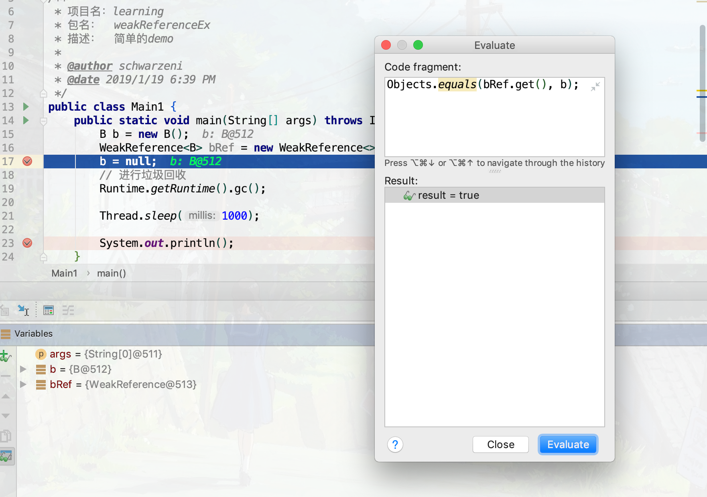
但是都 #2 时，获取的就是为空了
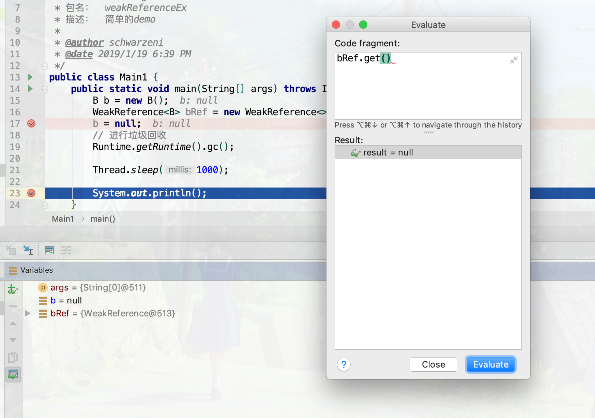
由于即使你执行了 gc() 垃圾收集器也不会立刻执行，执行也需要时间（它在不同的线程），所以使用 Thread.sleep 让这个线程暂停一会儿；这里尝试在 #3 上打上断点，看看它是何时被gc回收的；再执行，就会看到触发它的线程是 Finalizer
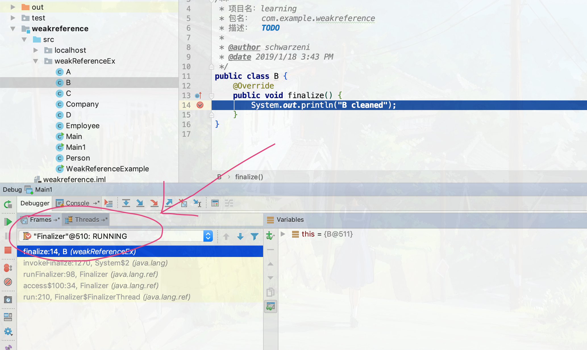
而程序的线程是 main；而调用栈最底层的就是 java.lang 包中，这个包中的类的是默认加载的，而这个线程的启动代码在 static块中，这样在类装载的时候这个线程就启动了
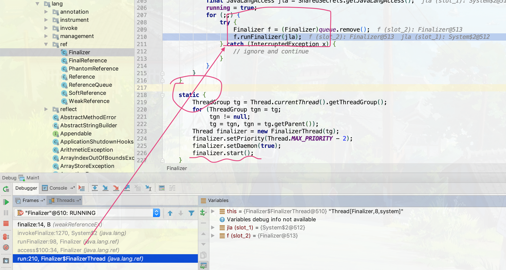
ReferenceQueue 初步认识
WeakReference有两种初始化方式，第一种如上，传入一个参数；另一种为传入两个参数，第一个参数和之前一样，第二个为类型为 ReferenceQueue 的实例。貌似在当前 WeakReference 实例ref所关联的实例b变为null时，`ref就会被放入到这个队列中，B类还是和之前的一样，实例代码如下
1 | public class Main1 { |
在 #1，#2，#3处打上断点，运行程序。
到断点 #1 时，会看到当前 ReferenceQueue 中的还没值
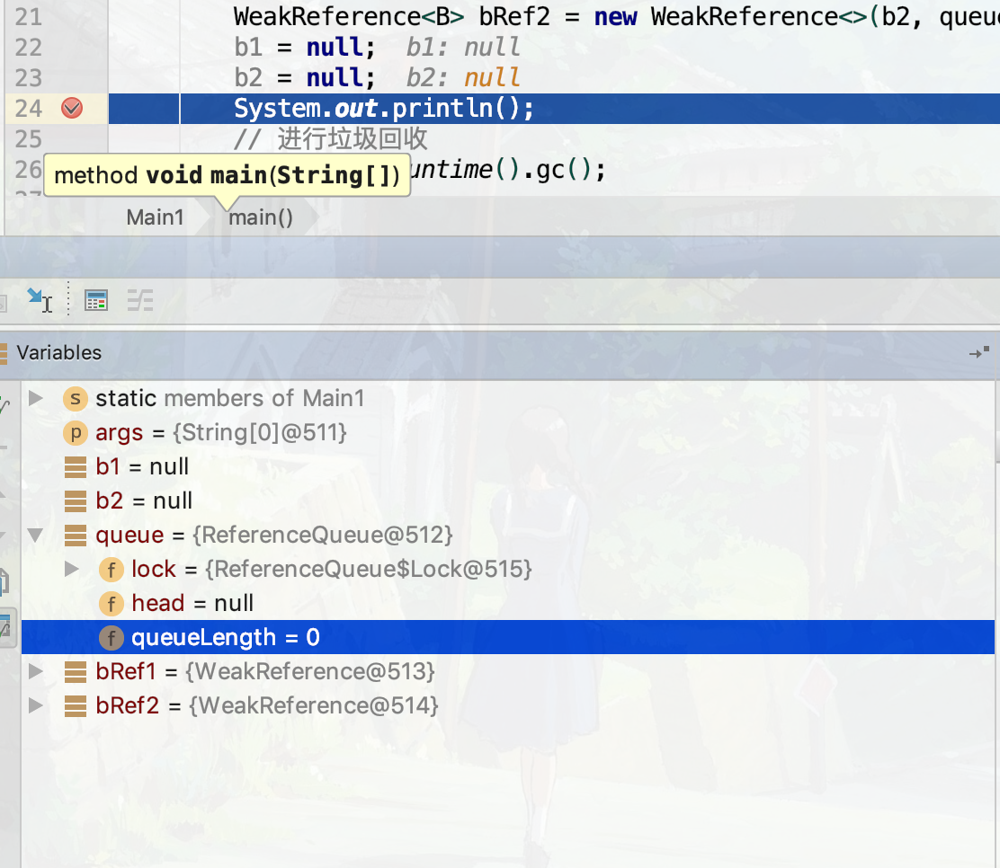
而当执行到 #2 时，会发现队列中已经有两个 WeakReference 了；由于它们指向的对象为null了，所有它们就自动被系统加入到该队列中了
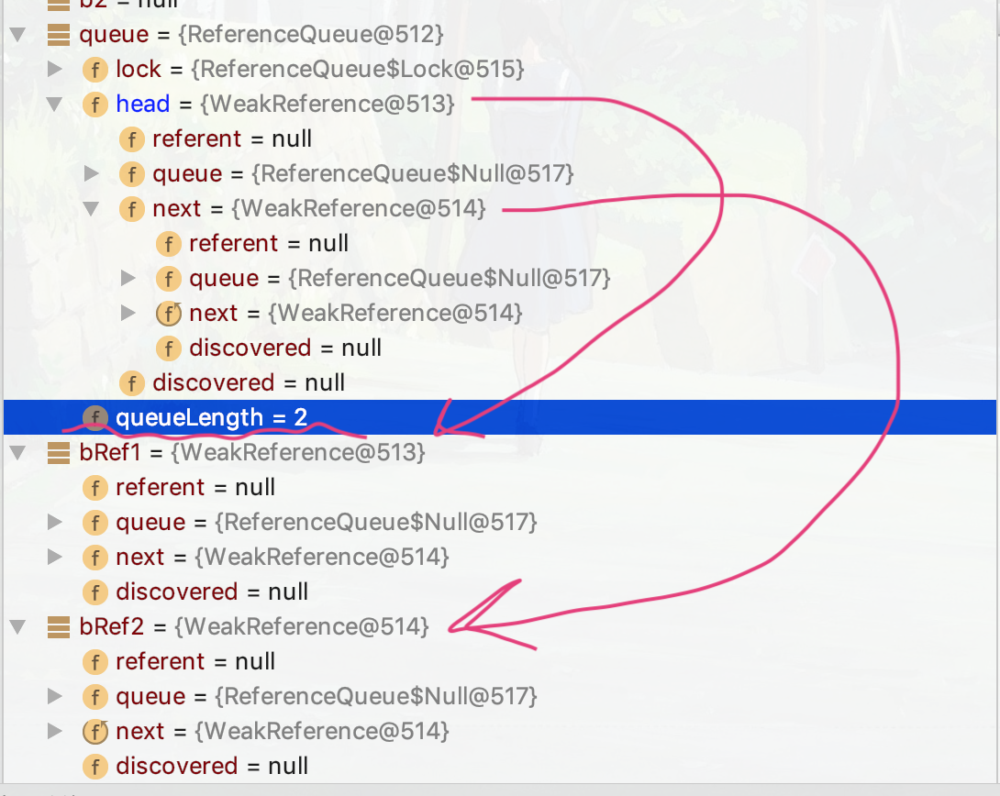
由于队列的性质，它们依次出队，先进先出，两个断言都正常执行，等到 #3 时，队列就为空了，使用的那两个断言也是成功执行的；不难发现，这个队列是使用链表实现的。那么它又是何时被系统进行入队操作的呢？ReferenceQueue 有一个 enqueue ，可以进行入队操作，那么给它打一个断点，重新运行程序，会发现在断点 #1 与 #2 之间跳到了 enqueue 方法中。对于多线程调试还是有点不熟悉，这里只发现了对于入队的处理是在另一个线程中的，如下图
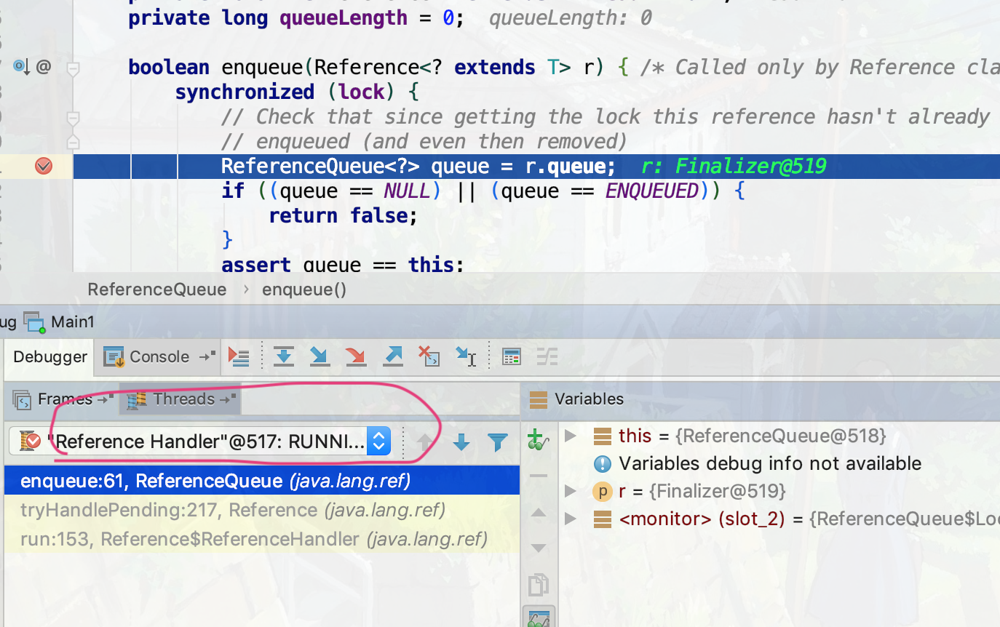
而这个Reference Handler线程也是在类 java.lang.ref.Reference 中随着JVM启动时加载的时候就启动的，而且还是线程最高优先级
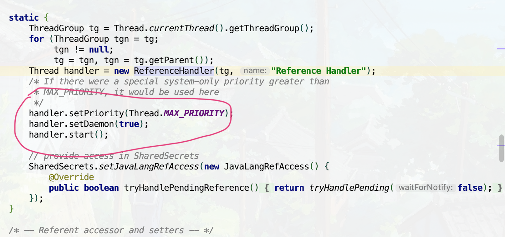
出于好奇我在 ReferenceQueue 的构造函数上打了一个断点，发现在主函数运行前这个构造函数被调用了好多次，至于都在那些地方被调用了由于能力有限无法深挖，真是遗憾555
使用 WeakHashMap
它和 HashMap 的不同之处在于，它的 key 就是 WeakReference 类型，在调用其 put 方法是时如果是一个新key，那么就会使用这个 Entity 类继承 WeakReference 的类进行初始化，调用的是有两个参数的构造函数。
当这个 key 被 gc 回收时，对应的 value 也同时会被回收，这个键值对从map中被移除
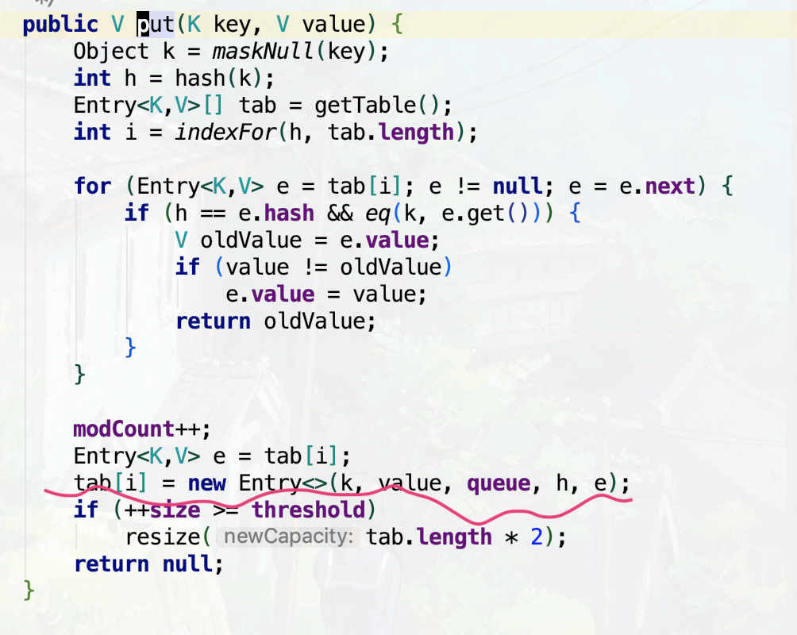
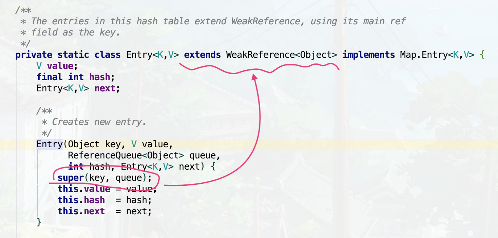
这里编写一个测试用例，B类加一个字段 String name，由于要使用到Map，记得Override一下 equals 和 hashCode 方法，为了便于调试，再Override一下 toString 方法
1 | public class Main1 { |
运行调试，当执行到 #1 时，Map中有两个值，同时当前数据堆中有四个B的实例，就是一开始实例化的那四个
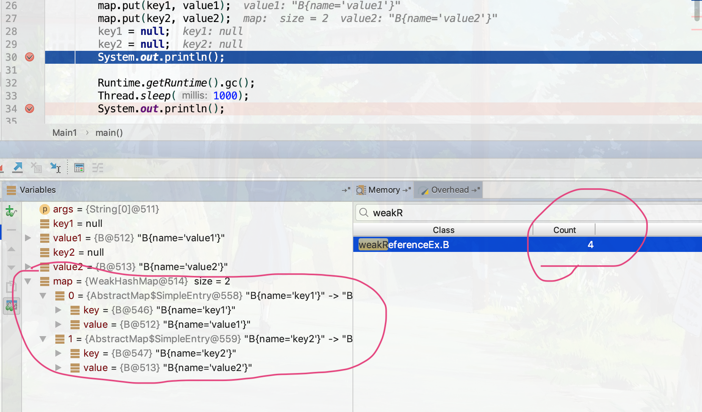
等运行到 #2 时，结果如下；此时Map为空，key 在堆上的内存已经人工调用gc给处理掉了，但是 value 对应的堆上的值还要等待着JVM自动清理掉
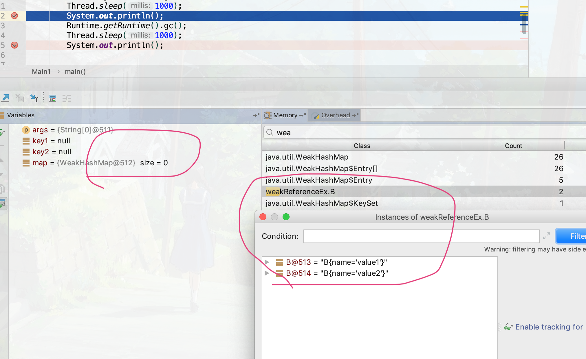
再手动清理一次，没了（注意，这次需要再启动一次调试，因为在图13中打开了查看其值的窗口，估计调试器对其产生了引用，所以无法清理掉，需要重启调试，不在断点 #1、#2 处停顿，直接到断点 #3 看效果）
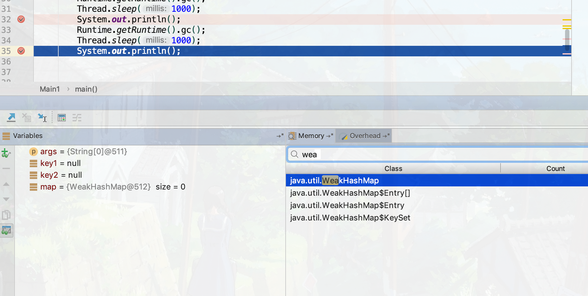